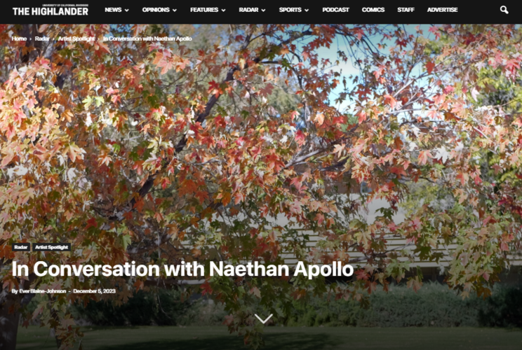

Ever Blaine-Johnson
Hello! I'm studying English at the University of California, Riverside, diving deep into the literary world as part of the University Honors program. I'm excited about my current project: a poetry book that allows me to explore the impact of writing on the human psyche.
Writing is a significant part of my life. I've contributed to our school newspaper, "The Highlander," covering various topics. This role has sharpened my communication skills, vital for my professional work as a Project Coordinator at Implementation Management Partners. Here, I lead project meetings and collaborate with clients and teams to ensure that strategic objectives turn into successful actions. My role allows me to blend creativity with practical strategy, enhancing team dynamics and project outcomes.
Before this, my freelance writing and editing gigs helped me build a robust skill set in creating engaging content across various subjects, meeting diverse client needs with precision and creativity. From managing a busy café in New York to navigating the dynamic demands of freelance work, each experience has honed my ability to adapt and thrive in changing environments.
When I'm not immersed in books or managing projects, you can find me catching waves or playing my guitar—activities that keep me connected to nature and fuel my creativity. Surfing offers a refreshing break from the academic grind, while music complements my literary pursuits.
Poetry remains my first love; it’s my unique way of seeing and sharing the world. Inspired by poets who push boundaries, I aspire to blend tradition with innovation in my writings.
Looking ahead, I'm eager to continue merging my passion for writing with my studies and professional experiences. Whether through advanced English studies, professional writing, or publishing my work, I'm excited for the journey ahead. I love writing and am committed to sharing this passion with the world.
Experience
Project Coordinator
• Orchestrate project stand-ups, reviews, and retrospectives, ensuring effective team collaboration and communication.
• Collaborate closely with clients to understand their needs, translating them into actionable project objectives.
• Play a key role in the development of project roadmaps by working with cross-functional teams to translate strategic objectives into actionable plans.
Writer / Editor
• Collaborated with clients to understand their specific requirements and vision, ensuring that the delivered content met their expectations.
• Thrived in a dynamic freelance environment by navigating diverse writing projects, showcasing adaptability, and solving creative challenges to meet client expectations and deadlines effectively.
Cafe Manager
• Implemented strategies to enhance the overall customer experience, including personalized services, menu optimizations, and staff training.
• Managed and led a team in the day-to-day operations of the cafe, fostering a collaborative and positive work environment.
Education
UC Riverside
College of the Desert
WIP
Portfolio
